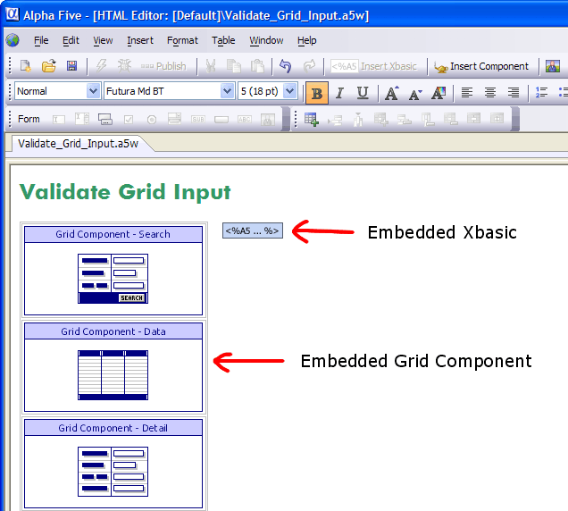

Using the HTML Editor
The Alpha Five HTML Editor is a full-featured HTML editor with three display modes:
WYSIWYG view
Source view
Interactive
You may open multiple documents concurrently.
You can prepare HTML code in either WYSIWYG or Source modes, switch freely back and forth as necessary. You can create HTML code or HTML mixed with Xbasic for ASW pages, then copy and paste it into Xdialog forms. The Interactive tab is useful for testing Xbasic code that you wish to place on a web page.

You may have multiple HTML Editor windows open to edit different files.
Optionally, click View > HTML Editor to display the HTML Editor.
If you are using the Web Component Builder :
Select a HTML or .A5W page and click Edit to open an existing page.
Click New > HTML Page > OK to open a new page.
The Source tab shows you all of the HTML coding.
HTML code has a yellow background.
Xbasic code has a white background.
HTML syntax elements are color coded to make them easier to identify.
The editor automatically inserts the closing tag for HTML elements that require closing tags.
There is a pop-up HTML reference that lists all of the HTML syntax elements and their descriptions. Just click on one to insert it.

The HTML Editor has five toolbars:
Custom - contains user defined functions
Please refer to:
If you are editing a page that has an embedded web component, you can edit the component in its associated Component Builder by double clicking the component.
The HTML Editor does not support the or tags.
Selecting all the rows, columns, or cells in a table and then pressing Delete leaves the table in an inconsistent state. This problem does not occur if you select the entire table element using its selection border.
When you open an A5W page in WYSIWYG mode, the editor automatically adds the following code below the tag. If you wish to use a different character set, you need to edit the page in a different editor.
|
|
See Also
A5_HTML_EDITOR(), HTMLENCODE()
Supported By
Alpha Five Version 6 and Above